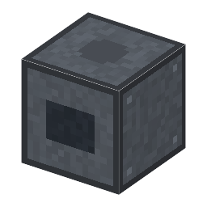

説明
①子ども モーターでローターを回して、空気をどんどん追い出すポンプ。真空容器のとなりに置く。
②学生 電気 250W。隣の真空容器を 1Pa まで引く（1気圧から約17秒）。隣の拡散ポンプの向こうの容器も引ける（拡散ポンプの前段ポンプ）。作り方：ローター＋鋼×2＋モーター＋水銀×2。
③大人 1905年、ゲーデは回転する部品と水銀で空気を区切って運ぶ「回転水銀ポンプ」を作り、真空ポンプを手で動かす道具から、モーターで回る機械にした。その後すぐ、油で封じる回転ポンプが作られた（⚠️ 1907年ごろ）。
④ガチ 軸からずれた（偏心）ローターが回ると、ケースとのあいだの部屋が広がって気体を吸い、狭くなって押し出す。すき間を液体（水銀・油）でふさぐのが大事。実験室の「ブーン」という音はこのポンプ。
作り方
使い道
（このアイテムを使うレシピは無い）